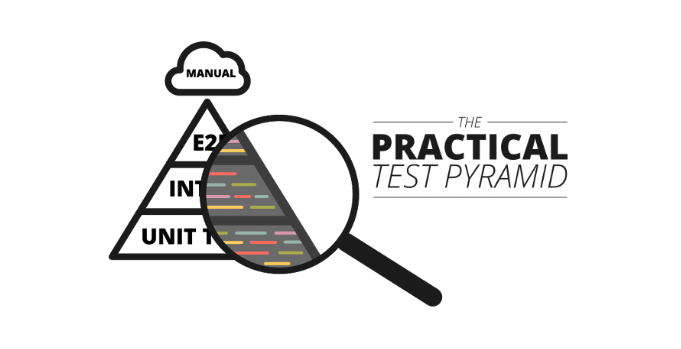
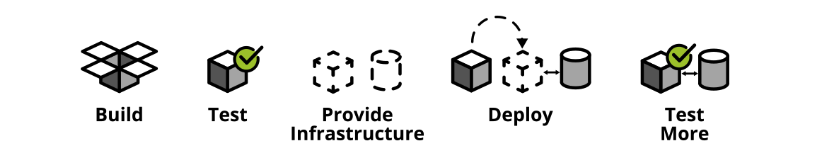
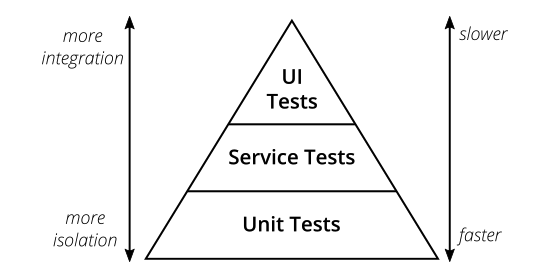
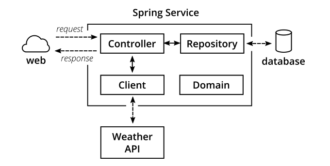
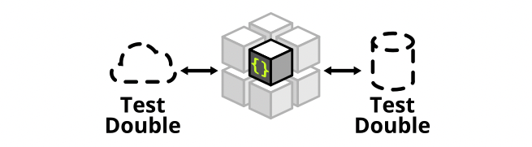
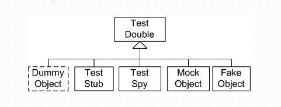
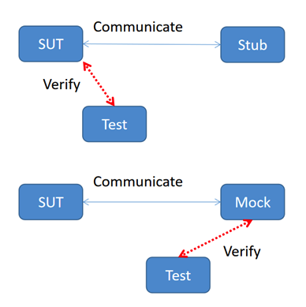
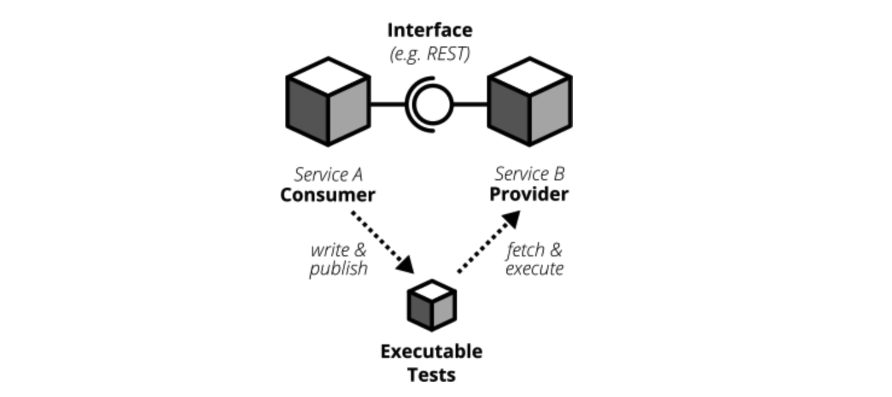
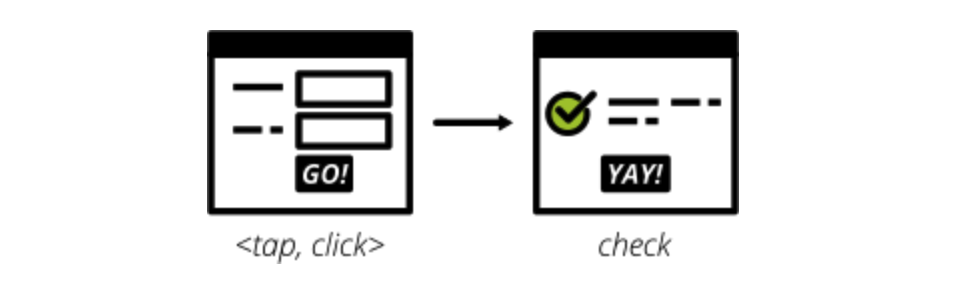
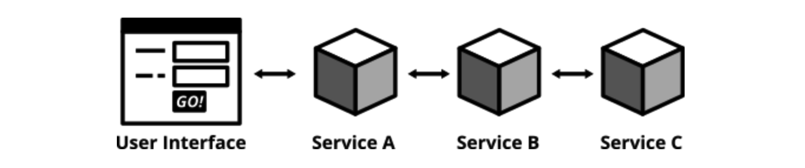

软件开发工程师谈测试金字塔实践¶

测试金字塔是对测试的分层描述，在不同层次做不同类型的测试。测试金字塔如何运用到工程实践，是一件困难的事情。原文作者是一位德国Thoughtworks的软件开发工程师，本文将回顾传统的测试金字塔，并结合实例，进行一次有深度的探秘实践。

自动化测试的重要性¶
软件上线前都是要经过测试的，随着测试技术发展，相比于传统的手工测试，如今的自动化测试越来越重要，它能够将成天上周的测试工作缩减到分钟秒级，提高测试效率，更快发现缺陷。尤其是在敏捷开发、持续交付、DevOps文化中，自动化已经成为了对测试的基本要求。比如持续交付，使用build pipeline自动测试和部署，随时能发包到测试环境和生产环境。

测试金字塔¶
测试金字塔是Mike Cohn在他的书籍《Succeeding with Agile》中提出的概念：

测试金字塔描绘了不同层次的测试，以及应该在各个层次投入多少测试。由底向上包括3层：
Unit Tests
Service Tests
User Interface Tests
这是最原始的测试金字塔，从现代视角来看，这个金字塔显得过于简单了，并且可能造成误导。比如service test不太能定义清楚。比如在react, angular, ember.js等单页应用中，UI测试并不一定在最顶层，而是可以写单元测试来测试UI。
但它有2点启示：
编写不同粒度的测试
层次越高，测试投入越少
实践使用的工具和库¶
JUnit：单元测试
Mockito：mock依赖
Wiremock：stub外部服务
Pact：编写CDC测试
Selenium：编写UI自动化
REST-assured：编写REST接口自动化
一个简单的应用¶
作者在GitHub上传了开源项目(795star)：
https://github.com/hamvocke/spring-testing
包含了遵循测试金字塔的分层测试的SpringBoot微服务应用。
功能¶
它提供了3个接口：
GET /hello 返回”Hello World“
GET /hello/{lastname} 返回“Hello {Firstname} {Lastname}”
GET /weather 返回德国柏林的天气（作者住在这）
内部结构¶

Controller提供REST接口，并处理HTTP请求和响应；
Repository跟数据库交互，负责持久化存储的数据读写；
Client访问外部API，比如这里访问了darksky.net的Weather API获取天气；
Domain定义领域模型，比如请求响应的结构体，也叫做POJO；
该应用支持CRUD，使用Spring Data访问数据库，数据库用的也是内存数据库，并且设计上省略掉了Service层，一切都为了简单，方便测试。
单元测试¶

什么是单元？¶
不同人对单元有不同理解，所谓单元，通常指某个函数，单元测试就是使用不同参数来调用函数，验证是否满足预期结果。在面向对象语言中，单元，可以是单个方法，也可以是整个类。
Mock和Stub¶
Test Double是“测试复制品“的意思，用来统称模拟真实对象的假对象：

Mock和Stub都是用来模拟的，它们的区别在于：

Stub只负责模拟，Mock还包括了验证。
以上是晦涩难懂且无关紧要的理论概念。实际点的，拿本文用到的Mockito和WireMock来说，Mockito用于单元测试mock依赖，WireMock用于集成测试stub外部服务，本质上都是模拟。
测什么¶
单元测试什么都能测，这就是单元测试的好处。
编写单元测试要遵循原则：一个production class对应一个test class。public要尽可能覆盖，private无法覆盖，protected或者package-private可覆盖可不覆盖，建议别覆盖。并且要保证分支覆盖，包括正常分支和边界场景。
但是并不是所有的public都需要编写单元测试，而是要避免琐碎的测试，比如getters或setters就不要测了，比如一些没有任何逻辑条件的也不需要测。
测试结构¶
初始化测试数据；
调用测试方法；
断言预期结果；
这是所有测试的良好结构设计，不只是单元测试。这三步还有其他叫法：“Arrange, Act, Assert”，或者“given”, “when”, “then”。
实现单元测试¶
对于以下ExampleController：
@RestController
public class ExampleController {
private final PersonRepository personRepo;
@Autowired
public ExampleController(final PersonRepository personRepo) {
this.personRepo = personRepo;
}
@GetMapping("/hello/{lastName}")
public String hello(@PathVariable final String lastName) {
Optional<Person> foundPerson = personRepo.findByLastName(lastName);
return foundPerson
.map(person -> String.format("Hello %s %s!",
person.getFirstName(),
person.getLastName()))
.orElse(String.format("Who is this '%s' you're talking about?",
lastName));
}
}
编写单元测试：
public class ExampleControllerTest {
private ExampleController subject;
@Mock
private PersonRepository personRepo;
@Before
public void setUp() throws Exception {
initMocks(this);
subject = new ExampleController(personRepo);
}
@Test
public void shouldReturnFullNameOfAPerson() throws Exception {
Person peter = new Person("Peter", "Pan");
// Mockito模拟输入输出
given(personRepo.findByLastName("Pan"))
.willReturn(Optional.of(peter));
String greeting = subject.hello("Pan");
assertThat(greeting, is("Hello Peter Pan!"));
}
@Test
public void shouldTellIfPersonIsUnknown() throws Exception {
// Mockito模拟输入输出
given(personRepo.findByLastName(anyString()))
.willReturn(Optional.empty());
String greeting = subject.hello("Pan");
assertThat(greeting, is("Who is this 'Pan' you're talking about?"));
}
}
单元测试使用了JUnit，PersonRepository使用了Mockito模拟数据。第一个测试是验证入参存在的名字会返回Hello。第二个测试是验证入参不存在的名字会返回Who。
集成测试¶
单元测试是模块内测试，针对模块之间，就要做集成测试。还有其他部分，比如数据库、文件系统、远程调用其他应用等，这些在单元测试中会忽略或者mock掉，也都需要做集成测试。集成测试也有多种理解，可以理解为全部集成的测试。而作者的想法是单独集成，一次只集成一个，比如集成测试数据库，那么其他部分仍然使用mock：
启动数据库；
应用连接数据库；
调用方法往数据库写数据；
从数据库读数据，验证数据是刚才写入的；
比如集成测试其他服务：
启动应用；
启动其他服务的实例(或者模拟服务)；
调用方法从其他服务的接口读数据；
验证当前应用能正确解析响应结果；
实现数据库集成¶
PersonRepository：
public interface PersonRepository extends CrudRepository<Person, String> {
Optional<Person> findByLastName(String lastName);
}
PersonRepository继承了CrudRepository，借助于Spring
Data自动实现了增删改查，比如findOne, findAll, save, update, delete等方法，对于findByLastName方法，Spring
Data也会根据返回类型、方法名称自动判断进行适配处理。
示例，保存Person到数据库中，并根据lastName查询：
@RunWith(SpringRunner.class)
@DataJpaTest
public class PersonRepositoryIntegrationTest {
@Autowired
private PersonRepository subject;
@After
public void tearDown() throws Exception {
// 清理测试数据
subject.deleteAll();
}
@Test
public void shouldSaveAndFetchPerson() throws Exception {
Person peter = new Person("Peter", "Pan");
subject.save(peter);
Optional<Person> maybePeter = subject.findByLastName("Pan");
assertThat(maybePeter, is(Optional.of(peter)));
}
}
实现独立服务集成¶
使用Wiremock模拟darksky.net服务：
@RunWith(SpringRunner.class)
@SpringBootTest
public class WeatherClientIntegrationTest {
@Autowired
private WeatherClient subject;
@Rule
public WireMockRule wireMockRule = new WireMockRule(8089);
@Test
public void shouldCallWeatherService() throws Exception {
wireMockRule.stubFor(get(urlPathEqualTo("/some-test-api-key/53.5511,9.9937"))
.willReturn(aResponse()
.withBody(FileLoader.read("classpath:weatherApiResponse.json"))
.withHeader(CONTENT_TYPE, MediaType.APPLICATION_JSON_VALUE)
.withStatus(200)));
Optional<WeatherResponse> weatherResponse = subject.fetchWeather();
Optional<WeatherResponse> expectedResponse = Optional.of(new WeatherResponse("Rain"));
assertThat(weatherResponse, is(expectedResponse));
}
}
怎么才能访问mock的这个服务呢？答案是在application.properties文件中配置：
weather.url = http://localhost:8089
以及WeatherClient实现：
@Autowired
public WeatherClient(final RestTemplate restTemplate,
@Value("${weather.url}") final String weatherServiceUrl,
@Value("${weather.api_key}") final String weatherServiceApiKey) {
this.restTemplate = restTemplate;
this.weatherServiceUrl = weatherServiceUrl;
this.weatherServiceApiKey = weatherServiceApiKey;
}
在集成测试darksky.net服务时，采用的是Wiremock，mock了darksky.net服务，如何验证mock的服务和真实的服务之间有无差异呢，就要进行契约测试。
契约测试¶
在微服务架构体系中，应用被拆分成了多个独立的松耦合的服务，彼此之间通过接口通信：
HTTPS
RPC
消息队列
每个接口包含2部分：provider和consumer：
比如在HTTPS中，provider提供接口，consumer调用接口；比如在消息队列中，provider发布消息，consumer订阅消息。
所谓契约，就是接口之间相互约定好的定义。传统的契约过程是这样的：
编写详尽的接口定义(契约)；
根据契约实现provider；
把契约同步给consumer；
consumer根据契约实现；
运行起来手动验证契约是否达成一致；
希望双方都不要随意变更契约；
而在CDC（Consumer-Driven Contract tests）中，第5、6步已经被自动化测试取代：

consumer编写并发布契约测试，provider获取并执行契约测试，当provider把所有契约测试都实现以后，自然就满足consumer了。provider会把契约测试放入持续集成中，确保所有契约测试都能始终保持通过，假如consumer发布了新的契约，契约测试就会失败，从而提醒provider更新实现。
Consumer Test¶
使用Pact工具实现契约测试。
build.gradle：
testCompile('au.com.dius:pact-jvm-consumer-junit_2.11:3.5.5')
WeatherClientConsumerTest：
@RunWith(SpringRunner.class)
@SpringBootTest
public class WeatherClientConsumerTest {
@Autowired
private WeatherClient weatherClient;
@Rule
public PactProviderRuleMk2 weatherProvider =
new PactProviderRuleMk2("weather_provider", "localhost", 8089, this);
@Pact(consumer="test_consumer")
public RequestResponsePact createPact(PactDslWithProvider builder) throws IOException {
return builder
.given("weather forecast data")
.uponReceiving("a request for a weather request for Hamburg")
.path("/some-test-api-key/53.5511,9.9937")
.method("GET")
.willRespondWith()
.status(200)
.body(FileLoader.read("classpath:weatherApiResponse.json"),
ContentType.APPLICATION_JSON)
.toPact();
}
@Test
@PactVerification("weather_provider")
public void shouldFetchWeatherInformation() throws Exception {
Optional<WeatherResponse> weatherResponse = weatherClient.fetchWeather();
assertThat(weatherResponse.isPresent(), is(true));
assertThat(weatherResponse.get().getSummary(), is("Rain"));
}
}
每次运行都会生成一个pact文件，target/pacts/&pact-name>.json，这个文件就可以拿给provider实现契约，通常做法是让provider在仓库中取最新版本文件。
Provider Test¶
provider加载pact文件并实现契约：
@RunWith(RestPactRunner.class)
@Provider("weather_provider") // same as the "provider_name" in our clientConsumerTest
@PactFolder("target/pacts") // tells pact where to load the pact files from
public class WeatherProviderTest {
@InjectMocks
private ForecastController forecastController = new ForecastController();
@Mock
private ForecastService forecastService;
@TestTarget
public final MockMvcTarget target = new MockMvcTarget();
@Before
public void before() {
initMocks(this);
target.setControllers(forecastController);
}
@State("weather forecast data") // same as the "given()" in our clientConsumerTest
public void weatherForecastData() {
when(forecastService.fetchForecastFor(any(String.class), any(String.class)))
.thenReturn(weatherForecast("Rain"));
}
}
UI测试¶
UI测试主要验证应用界面是否正确：

用户输入，触发程序，数据展示给用户，状态变更正确。
UI自动化主要基于Selenium来做，由于前端变化大、控件识别难等问题，导致UI自动化失败率比较高，可以考虑采用截图的方式，把前后截图进行对比，来做断言，当然Selenium已经支持截图对比了。
端到端测试¶
端到端测试，通常是指从用户界面进行测试：

如果没有用户界面，也可以指对接口进行测试。
UI端到端测试¶
使用Selenium和WebDriver实现：
build.gradle
testCompile('org.seleniumhq.selenium:selenium-chrome-driver:2.53.1')
testCompile('io.github.bonigarcia:webdrivermanager:1.7.2')
HelloE2ESeleniumTest
@RunWith(SpringRunner.class)
@SpringBootTest(webEnvironment = SpringBootTest.WebEnvironment.RANDOM_PORT)
public class HelloE2ESeleniumTest {
private WebDriver driver;
@LocalServerPort
private int port;
@BeforeClass
public static void setUpClass() throws Exception {
ChromeDriverManager.getInstance().setup();
}
@Before
public void setUp() throws Exception {
driver = new ChromeDriver();
}
@After
public void tearDown() {
driver.close();
}
@Test
public void helloPageHasTextHelloWorld() {
driver.get(String.format("http://127.0.0.1:%s/hello", port));
assertThat(driver.findElement(By.tagName("body")).getText(), containsString("Hello World!"));
}
}
接口端到端测试¶
使用REST-assured实现：
build.gradle
testCompile('io.rest-assured:rest-assured:3.0.3')
HelloE2ERestTest
@RunWith(SpringRunner.class)
@SpringBootTest(webEnvironment = SpringBootTest.WebEnvironment.RANDOM_PORT)
public class HelloE2ERestTest {
@Autowired
private PersonRepository personRepository;
@LocalServerPort
private int port;
@After
public void tearDown() throws Exception {
personRepository.deleteAll();
}
@Test
public void shouldReturnGreeting() throws Exception {
Person peter = new Person("Peter", "Pan");
personRepository.save(peter);
when()
.get(String.format("http://localhost:%s/hello/Pan", port))
.then()
.statusCode(is(200))
.body(containsString("Hello Peter Pan!"));
}
}
验收测试¶
在测试金字塔的位置越高，就越会站在用户角度进行测试。验收测试就是完全从用户角度出发，看系统是否能满足用户需求。
简单示例：
def test_add_to_basket():
# given
user = a_user_with_empty_basket()
user.login()
bicycle = article(name="bicycle", price=100)
# when
article_page.add_to_.basket(bicycle)
# then
assert user.basket.contains(bicycle)
不要执着于测试术语¶
单元测试、集成测试、端到端测试、验收测试，每个人都有自己的不同理解，现在的软件测试行业，也没有统一的测试术语，将这些测试类型的边界明确区分开来。只要我们在公司内部、团队内部，能对术语达成一致，顺畅沟通就可以了。
参考资料：
Thoughtworks研发博客 https://martinfowler.com/articles/practical-test-pyramid.html
Test Double http://xunitpatterns.com/Test%20Double.html
WireMock和Mockito区别 https://geek-docs.com/mockito/mockito-ask-answer/wiremock-vs-mockito.html
Pact官方文档 https://docs.pact.io/